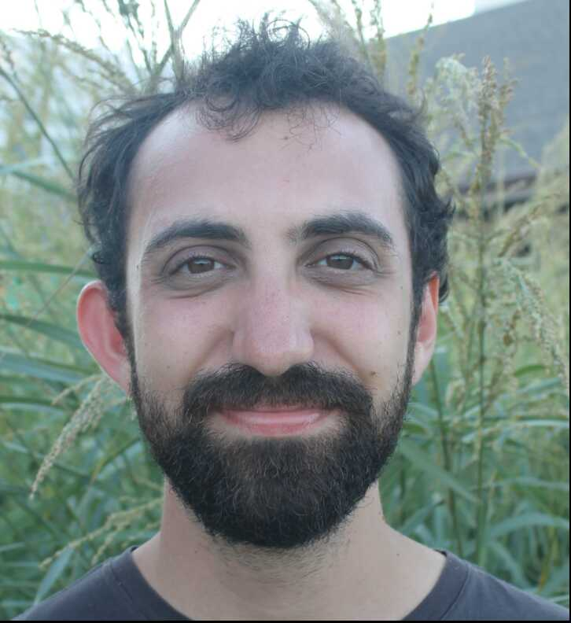

I am an Assistant Professor at Northeastern University.
I apply tools from Formal Methods and Programming Languages to construct and certify secure systems – particularly systems that use cryptography. Broadly, I am interested in applied cryptography, distributed systems, type systems, proof assistants, and compiler correctness.j.gancher@northeastern.edu
Office: WVH 332
CV · GitHub